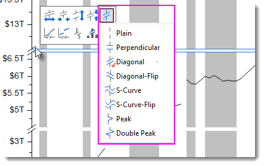
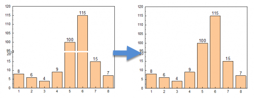

FAQ-997 Wie ändere ich die Form der Achsenunterbrechung?
Remove-Gap-Axis-Break
Letztes Update: 17.02.2020
Per Standard wird die Achsenunterbrechung als diagonales Symbol hinzugefügt.
Um dem Achsensymbol eine andere Form zu geben:
- Klicken Sie nach Hinzufügen der Unterbrechung auf sie und wählen Sie die Schaltfläche Symbol der Achsenunterbrechung auf der angezeigten Minisymbolleiste.
- Wählen Sie ein gewünschtes Symbol in der Liste des Submenüs.
- 
Um die Lücker der Unterbrechung, wie unten in der Grafik, zu entfernen:

- Öffnen Sie das Skriptfenster (im Menü Fenster: Skriptfenster) bei aktivem Diagramm, wenn es nicht bereits geöffnet ist.
- Kopieren und fügen Sie den LabTalk-Befehl layer.x.breaks.gap im Skriptfenster ein. Drücken Sie Enter, um das Skript auszuführen.
-
layer.y.breaks.gap=0
Stichwörter:Achsenunterbrechung, Lücke, Eigenschaften der Achsenunterbrechung, einfache Unterbrechung, senkrecht, diagonal, diagonal spiegeln, S-Kurve, S-Kurve spiegeln, Unterbrechung wie Peak, Unterbrechnung wie doppelter Peak